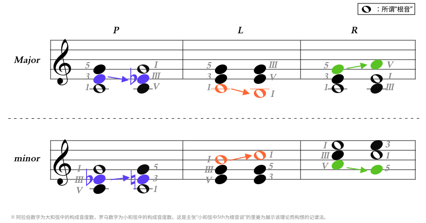
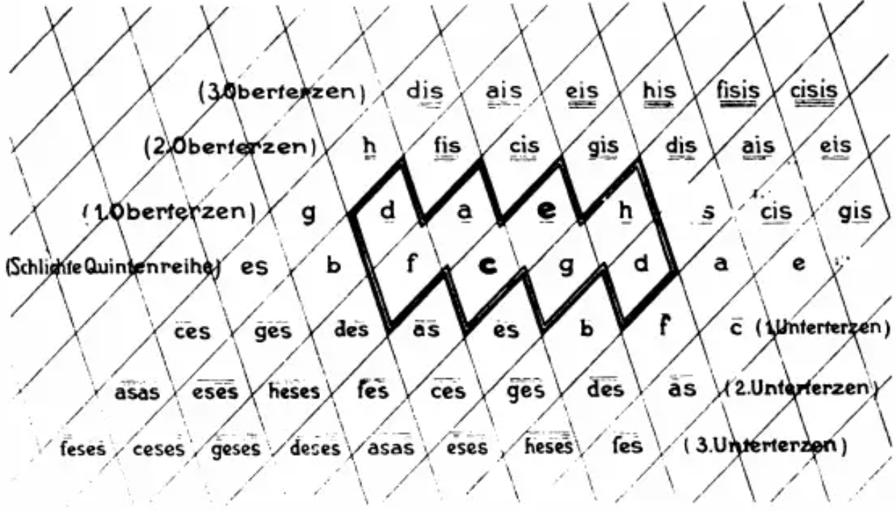
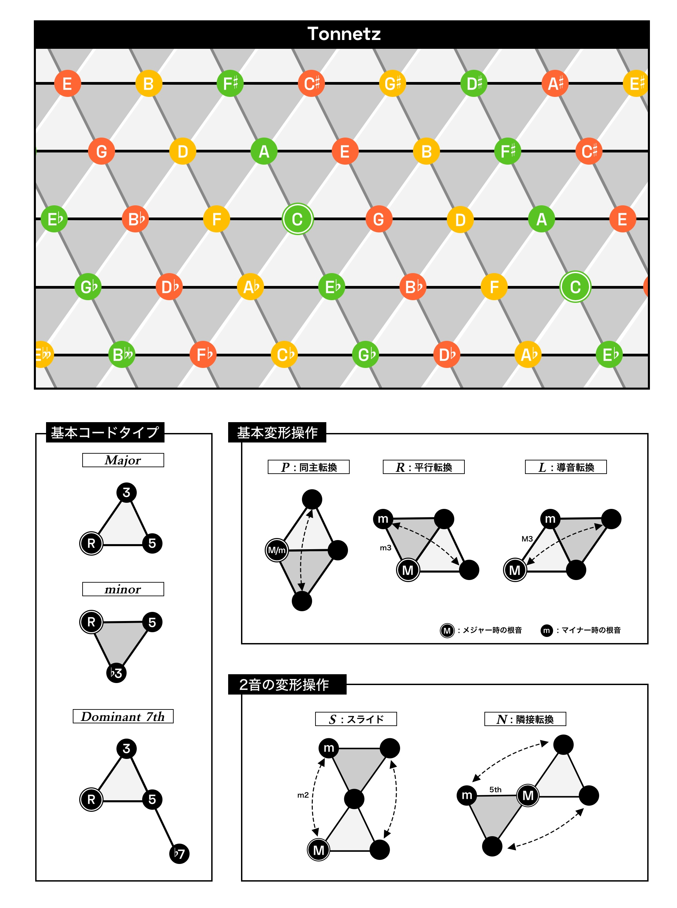
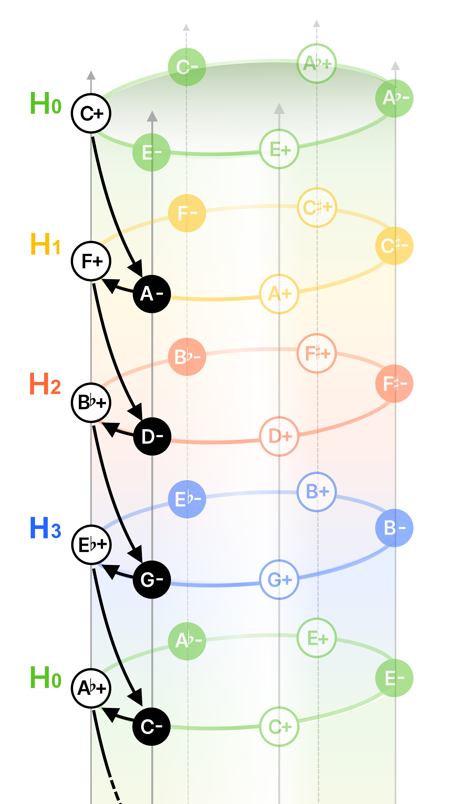

在上一篇功能和声的演变❷中，我们提到受到里曼启发的（主要是美国的）理论家们，继承并发展了里曼的部分构想。这类理论研究被统称为新里曼理论（Neo-Riemannian Theory，简称 NRT）。这一领域即使进入21世纪的今天依然在进行着热烈的讨论，是一套仍在蓬勃发展中的现代理论。 在这篇文章中，我们将介绍新里曼理论研究中最核心的主要成果。
 1. 变换的理论
1. 变换的理论
首先正如功能和声的演变❶中所解释的，里曼基于和弦与 T、D、S 之一的关联性，为众多和弦赋予了特定的符号。

其显著特征在于：如上所示，Cm、Am、Em 都是通过将 C 和弦的其中一个音移动得来的——即通过“音的位移”来解释和弦。里曼的理论是为通过这种变形操作产生的和弦赋予固有符号，他所追求的是构建一套取代罗马数字记谱法的和弦符号体系。 然而新里曼理论对此提出了异议。他们认为：既然“位移”这个构想如此有趣，那么像 Relative（关系和弦）或 Leading-tone exchange（导音交换）这样的词汇，不应该用作和弦本身的名称，而应该用作这种位移*操作（Operation / Transformation）*的名称。新里曼理论的先驱戴维·卢温（David Lewin）对于里曼虽然发展了和弦变形的构想，却没有将其明确提炼为“变换的理论（Transformational Theory）”这一点，提出了相当辛辣的批评：
An even more basic problem for Riemann was that he never quite worked through in his own mind the transformational character of his theories. He did not quite ever realize that he was conceiving “dominant” (whether DOM or DOM′) as something one does to a Klang, to obtain another Klang. Here, I conjecture, he was unduly influenced by a desire to promote his notation as a substitute for Roman-Numeral notation;
对里曼而言更根本的问题是，他从未在自己头脑中想清楚自身理论所具备的变换性质。他根本没有意识到，自己实际上是将‘属’（无论是 DOM 还是 DOM′）构想为对一个和音（Klang）所施加的、用以获得另一个和音的操作行为。在此我推测，他被急于推销自己的记谱法以取代罗马数字记谱法的野心蒙蔽了双眼；
Lewin, David. Generalized Musical Intervals and Transformations (p.177).
连当时的野心都被如此无情吐槽，读来让人觉得里曼颇为委屈。但其他学者也提出了类似的批评[1]。确实，在之前的功能和声论文章中也提到过，里曼的“功能（Function）”带有类似于数学“计算式/函数”般的侧面，表现了将一个和弦转换为另一个和弦的过程。

这种吐槽其实是出于热爱：“这么好的点子，没有深挖到底实在太可惜了！！”于是，基于里曼的这一构想、致力于将和弦变形操作系统化的理论，正是新里曼理论。 这种“从和弦本身的符号化，转变为和弦变形操作的符号化”的范式转换，正是新里曼理论的思想核心，这也是他们冠以“新（Neo-）”之名的缘由所在。 这类似于在“连接系理论”中，我们观察的不是排列出来的和弦本身，而是和弦与和弦之间的变化。转换分析的视角，就能获得前所未有的新发现。新里曼理论同样能赋予我们全新的洞察力。
三种基本的变换操作
新里曼理论中具代表性的变形操作，对应于上谱所示的 C⇄Cm、C⇄Em、C⇄Am 的变换。

对于同主音关系和弦之间的切换称为 Parallel，大三度关系和弦之间的切换称为 Leading-tone exchange（导音交换），平行调/关系调和弦之间的切换称为 Relative，直接沿用了里曼曾用作功能名称的词汇。虽然它们有时被简写为 PAR、LT、REL，但更普遍的做法是简练地取其首字母，缩写为 P、L、R。这三种操作在新里曼理论的绝大多数研究中都被定义为最基本的操作。
声部进行的俭约性
如谱所示，P 和 L 仅仅移动了，R 也只有一个音移动了，声部的进行相当平滑。例如 C 与 Em，在理论中需要经过 E→A→D→G→C 这样多达4次五度循环才能联系起来，是相距甚远的存在；但若重新认识到它们仅仅相差半音即可到达，为和弦进行引入有别于传统的价值标准，这正是新里曼理论的重大意义之一。 在思考和弦之间的连接时，比起根音移动的跨度，更看重声部连接位移量的思维方式被称为声部进行的俭约性（Voice-Leading Parsimony）[2]，这也是探讨新里曼理论时的核心关键词之一。
里曼笔下的镜像世界
关于 PLR 操作的一个注意事项是：各项操作会根据和弦是大和弦还是小和弦而发生内容反转。R 操作对于大和弦是将五音（5th）上移全音；但对于小和弦而言，R 意味着相反方向的操作，即将根音（Rt）下移全音。因此，虽然被称为“三种基本操作”，但在实质上存在着6种变换模式。 为什么会形成大调与小调处理方式截然相反这样复杂的方法论呢？这与前文稍有提及的“和声二元论”思想密切相关。里曼将小和弦视作大和弦完全的上下颠倒，甚至主张小和弦的根音是五音。由于所有法则都是反向运作的，将 P、L、R 的操作在大小调之间完全上下颠倒，对里曼来说才是逻辑通顺的做法。


当然，新里曼理论的学者们基本上摒弃了“五音为根音说”，但正因为源自这种和声二元论，才造就了大小调操作反转这一独特的系统。结果是：PLR 操作都伴随着和弦的大小调性质转换（Mode Change），并且具有重复两次即返回原和弦的特性。这让人联想到数学中“负负得正”的精妙美感。
PLR 操作与根音变化
虽然说“将 C-Em 视为半音位移而非上行三度”，但在实际问题中，这些操作究竟使根音移动了多少音程，依然令人好奇。我们把转位形式还原为原位形式，确认各项操作中根音的变化，如下所示：

由此可见，基本操作中只采纳了大小三度的连接，而且在上行和下行方向上也缺失了一半（例如：大和弦上行小三度并不在基本操作之列）。简而言之，这充分说明了它是一个世界观相当奇特偏门的理论。 这也是事出有因：里曼首先将与 T 和弦呈上下五度关系的确定为 D 和 S，在考虑其余和弦如何处理的阶段才提出了平行和弦与导音转换，因此五度进行未被列入此处是必然的结果。 而且由于里曼是从调内和弦的符号化起步的，在自然音阶和弦中不可能出现的“大和弦上行小三度”自然也就没有对应的符号。对于这种体系上的畸形不对称，当然也有新里曼学者提出了异议，对此我们后文再述。
五度与二度如何表达？
如果仅将 PLR 操作视为和弦进行的“元素”，那么五度或二度的进行就必须用组合多个操作的方式来进行标记。

如此一来，对 C 先后进行 L、R 变换可得到 G；反之按 R、L 顺序变换则得到 F。因此在新里曼理论中，大和弦到大和弦的纯五度上行表示为 LR，纯五度下行表示为 RL。若涉及 min→min 或 min→Maj，步骤又会发生改变，这确实相当繁复。 而对于二度上行，由于没有共同音，到达目标至少需要经过3步操作。

在上谱的 C-Dm、F-Em 示例中都是3步，但在不同的和弦性质情况下，可能还需要穿插 P 操作。
D 操作
仅将三度连接视为“基本元素”，装备未免也太简陋了吧？因此，部分学者将五度下行命名为 DOM 或 D，并加入到基本变换中[3]。在这种情况下，诸如 V-IV 这样的二度下行就可以被更简明地描述为“两次五度下行”。

因为二度下行是进行两次 D，所以记作 D²；或者若为五度“上行”，因为是反向操作所以记作 D⁻¹，也有人借鉴了这种数学式的记号。 关于 D 操作，学者们分成了“使用的字母越少越纯粹所以不用”派和“有了更方便所以使用”派，学界派系并未完全统一。
S 操作与 N 操作
具有共同音的和弦连接还有很多，只要想命名，想要多少就可以命名多少。其中获得了一定地位的操作是 SLIDE (S)[4] 和 Nebenverwandt (N)[5]。

“Nebenverwandt”在英语中意为“Next-related”（邻近关系）。如果以半音数量来衡量音的移动幅度，移动两个半音与 R 操作移动一个全音是等价的，因此为其单独命名也未尝不可。关于 N 操作，除了 I-iv 进程外，它还能用一个字母描述古典派小调的终止式 III-vi，采用它确实很方便。 无论如何，新里曼理论对三度连接赋予了极高的特权，其他连接都被置于次要地位。然而，三度连接与 I-IV-V-I 或 vi-ii-III-vi 等基础终止式毫无瓜葛，在传统和弦理论中也较为冷门，如此优先重视三度连接究竟有何意义呢？
2. 分析对象
新里曼理论有着明确的核心目标音乐体裁，那就是19世纪浪漫主义时期的古典音乐[6]。18世纪古典乐派理论大成，20世纪无调性理论诞生；而在处于两者夹缝中的19世纪音乐里，诞生了大量试图逐步偏离古典价值观的开创性作品。在这些作品中，虽然是局部的，但确实频繁出现故意向古典派既定终止式反叛、大量运用三度连接的段落。
这是勃拉姆斯于1887年创作的《小提琴与大提琴双重协奏曲》。从第270小节静下来的部分开始，出现了一连串包含多次同主音大小调转换的奇妙进行。分析其和弦如下：

这绝非传统惯例的进行，但却展现出极具规律性的优美质感。而且，全篇仅使用了三度连接……这正是新里曼理论大显身手的时刻！用 PLR 变换操作理论来分析它：

令人惊叹的是，浮现出了一串极具规律性的字符串：PLPLPLP！这是新里曼理论分析大获成功的典型范例。在传统理论中，大概会把 G♯m-E、Em-C 视为成组的单元，解释为在大三度转调中循环反复；但如果试图用 T、D、S 的功能感或级数来进行解释，就会陷入十分勉强的境地，而且在缺乏五度进行而导致调性根本未明确确立的情况下，强行解释为“一连串连续转调”，反而脱离了乐曲的本质。 相比之下，“PLPLPLP”的表述让人一眼就能看清：不同音阶的衔接处是通过无根音移动的 Parallel 转换连接的，而且整个进行中全程都只有极其平滑的半音移动，展现出极其“俭约”的声部进行。
再看贝多芬1824年创作的以第四乐章闻名的《第九交响曲》的第二乐章。在典型的连续 V-I 终止式之后，出现了 C-Am-F-Dm（I-vi-IV-ii）这样一连串的三度下行，随后是整整3小节的全员休止。按古典常规，ii 之后理应走向 V，然而令人吃惊的是，接下来居然是 Dm-B♭-Gm-E♭，继续展开三度下行！随后再次经过3小节休止，又从 E♭ 开始了更加凶猛的三度下行。用新里曼理论分析进行到 A 和弦为止的全过程……

居然是：RLRLRL RLRL RLRL RLRL！纯粹而彻底的 RL 循环！ 在传统理论中，人们大概会将其看作是 I-vi-IV-ii 的连续反复，但在这种极具规律的大调与小调交替中，把一部分划分为 I-vi、另一部分划分为 IV-ii 来分配级数，未免显得有些主观强解，像是强行把作品套进调性音乐的模型中。要清晰展现贝多芬在此构建的规律性进行之美，新里曼理论显然更胜一筹。
在第III章末尾的文章中，我们曾讨论过被称为“色彩中音（Chromatic Mediant）”的非调性三度进行在电影配乐中的广泛应用。这类音乐同样是新里曼理论极其擅长的领域。 此外在摇滚乐中，像 C-E♭ 或 C-A♭ 这样超出传统调性框架的三度进行也屡见不鲜，甚至存在使用新里曼理论分析电台司令（Radiohead）或奥齐·奥斯本（Ozzy Osbourne）歌曲的学术论文。 因此，专门针对三度进行的理论作为主流核心武器或许有些过于狭窄，但对于特定音乐的特定场景而言，它却是绝佳的分析工具。这正如埃尔诺·伦德瓦伊的中心轴系统能够有效补充三全音关系的构想一样。
PLR 变换操作是新里曼理论最具代表性的内容，此外还包含一些其他有趣的研究，我们也逐一介绍。
3. 音网（Tonnetz）
里曼在出版前述的《Harmony, Simplified》之后仍在不断更新自己的理论，并在1916年出版了《音表象理论之构想》（Ideen zu einer ‘Lehre von den Tonvorstellungen’）。 书中不仅考察了聆听音乐时的受众心理，还尝试对音的关系进行图式化与公式化。其中之一就是将音的关系像网眼般交织图示化的音网（Tonnetz）[7]。

Riemann, Hugo. Ideen zu einer ‘Lehre von den Tonvorstellungen’.Tonnetz 在英语中即 Tone's Net，意为“音之网络”。以 c 为中心看，左右两侧为 f 和 g，这是与五度圈相同的纯五度排列；看上一行，音同样按 g-d-a-e 的纯五度关系排列。再看从 c 往右上与左下的斜对角线，是 e-c-a♭ 的大三度连接；反之左上与右下的斜对角线则是 a-c-e♭，为小三度关系。像这样以五度与三度关系将音的连接网络进行二维图示化的，就是音网。 以往音关系的图示只有“五度圈”，但五度圈只是用一条线将音连成圆环，理所当然只能明确五度关系。而音网通过双轴在二维平面上排列音，不仅将五度关系、连同大三度与小三度的关联也全部可视化。因此不难想象它具有更加广泛的应用潜力。
现代通用的音网
音网的本质在于“横轴为五度间隔，斜轴/纵轴为三度间隔制表”，具体的可视化呈现有多种形式。有不采用倾斜而严格采用长方形网格的，也有上下颠倒的，对等音（异名同音）的区别程度也因人而异。 不过后世理论家在新里曼理论中所作出的广为流传的改良，是不再把音写在网格内部，而是将音放置在网格的交点上，形成用线将各个音连接起来的风格。


信息量略大，我们逐一进行解释：首先，通过用线段将各音相连，大和弦或小和弦的和弦音连接起来就会形成一个三角形。因此，绘制在这张音网上的三角形单元格，其本身就表征着和弦。例如连接 C、E、G 三点的三角形，就代表 C 大三和弦。而通过 PLR 操作向另一个和弦变换，均表现为在该网格上移动一个单元格的行为。次要的 S、N 操作也表现为犹如翻转沙漏般的优美对称移动。 音网绝不仅限于新里曼理论使用，但由于其结构使得 PLR 操作都恰好对应移动到相邻单元格，与给予这些操作特权地位的新里曼理论相得益彰。例如前面提到的贝多芬 C-Am-F-Dm 和弦进行在音网上表现如下：

如此一来，和弦进行就像在棋盘格上走棋一样，能够以空间化、几何图形化的方式呈现出来。而且越是“俭约”的声部进行，三角形越紧密相接，勾勒出优美的移动路径——这显然蕴含着巨大的应用潜能！正如五度圈成为推导调号增减或寻找调内和弦的工具一样，这种通用的图表在实战创作与理论分析中都是强有力的利器。
和弦版音网
音网将单音作为点、将和弦表示为面或线，由此自然会产生一种想法：如果让每个点直接代表一个和弦，在探讨和弦时会不会更加紧凑小巧？这种设想也已经被具象化，如下图所示：

在新里曼理论中，通常借鉴数学用加号（+）表示大和弦，减号（-）表示小和弦，上图遵循了这一惯例（在通常的和弦理论中加号代表增和弦aug，容易引起混淆，但在此已约定俗成）。 在这张图中，和弦进行被表现为线上的移动，相比于在面上移动处理起来更加直观简明。
4. 超六音系统（Hyper-Hexatonic System）
音网将音铺陈在 XY 平面上向无限延伸，然而在映射在一个八度内循环的音乐世界时，像五度圈那样的圆环结构在某些时候更具直觉性。例如前面勃拉姆斯的和弦进行在 A♭-G♯m-E-Em-C-Cm-A♭ 中完成了一个循环并回到原点。这是通过连续的大三度绕八度转了一圈，如果有类似于五度圈的“三度圈”，就能极清晰地可视化这种循环性。
六音环（Hexatonic Cycle）
这一设想同样被提了出来，首先制作如下的小圆环：

这是表示重复进行 L、P 操作最终会回到原点的图示，列出了相距大三度的三个根音上的大小和弦共计6个和弦。勃拉姆斯的和弦进行正是沿着这个圆环顺时针优美循环的进行。 有趣的是，由于它们通过各有两个共同音的极其“俭约”的声部进行相连，构成这6个和弦所需的全部音符总共也只有6个。

如上所示，只要有 c、e、g、b、e♭、a♭ 这6个音，就能构建出这6个和弦。6个音造就6个和弦，非常奇妙。这个圆环由于由6个音组成，因此被称为六音环（Hexatonic Cycle）[8]。
构造4个圆环
这样一来很自然地会想到：用 C、E、A♭ 以外的根音组合也能构造出相同的圆环。例如升高半音，从 C♯、F、A 的根音构建圆环，如下所示：

只是将上一张图整体升高了半音，并没有任何不可思议之处。但耐人寻味的是，构建这6个和弦所使用的6个音中，c、e、g♯ 这3个音在刚才的圆环中就已经登场过了。

在前面的 SLIDE 操作中，我们刚刚见证了 C 的三音 e 同时也是 C♯m 的三音，因此这本是理所当然的。但看到这张图，依然不禁为其几何之美所震撼……！ 照此推进，把包含 D 的环、包含 E♭ 的环全部建立起来，和弦总数就是 6×4=24 个。换句话说，涵盖了12个根音上的大小和弦全部24个和弦。将它们全部整合到一张图上……

就变成了这样！像这样将4个六音环并列排布，并在内侧以类似韦恩图的形式框定各环所使用的音高，以 L、P 操作为核心将24个和弦的关系整合起来的图示，被称为超六音系统（Hyper-Hexatonic System，简称 HHS）[9]。 在这张图上，L、P 操作首先表现为圆环内的循环；根音的半音移动或五度进行表现为移动到相邻的环；全音移动或三全音进行表现为移动到正对面的环。此外，像 C↔︎A♭m 这样在同一个环内向正对面移动的操作具有特殊意义，被命名为 H (Hexatonic Pole，六音对极)。在这张图示中，R 操作的可视化并未作为重点。
六音环圆筒（Cylinder）
如果考虑到 R 操作以及五度关系的重要性，希望将它们的连接也更清晰地展示出来，将各个环在纵向上叠加、用五度关系纵向贯穿起来，就会形成圆筒（Cylinder）状的立体结构，从而能够用简练的线条连结更多操作[10]。

以立体图形来呈现，在关系的表现力上更为优越。有趣的是，在优先考虑以五度相连时，上方的 H0 与下方的 H0 圆环角度旋转了120°。 在这一立体图上，前面提到的贝多芬连续 RL 链条的进行，表现为沿着圆筒侧面的某个区域滑落的轨迹。


将其用于分析非常引人入胜，而在创作中以该图为灵感构思全新的和弦进行也同样别具趣味。
作为互补理论的意义
正因为 PLR 变换理论专精于三度进行，它能够极其鲜明地捕捉到在以五度为中心的传统理论中容易被视作细枝末节的优美三度动向与半音进行。在传统理论的分析中，聚焦于 V-I 的动向被视作重中之重，三度进行的段落常常被简单地作为“同一功能的延展”而被略过。而将聚光灯投射于此的新里曼理论，在作为补充传统理论的辅助工具时，显得尤为强大。 例如在转调方面，虽然借助属功能和弦或减七和弦推动力的手法最具代表性，但像前面贝多芬《第九交响曲》中那样仅凭 Fm 到 D♭ 进行便告完成的柔顺平滑转调，在基础曲目库中并不多见。如果仅凭借传统理论分析，该例很可能被作为“贝多芬果然极具革新性”这样的“特例”一笔带过。 然而借助新里曼理论，我们能够将这类用例归入 PLR 名下进行系统分类与收集，从而能够基于用例将其提炼为具有可复现性的技法回馈于实践。 此外，由于只关注和弦之间的连接，不需要确定调（乃至和弦的级数），从这两个简短的例子中便能感受到它在分析调性瓦解的19世纪浪漫主义音乐时的得心应手。 在分析中确立调性、关注根音的变化、以五度进行为根本——这些是传统理论的基本信条；而新里曼理论在结果上对这一切采取了反向立场：分析不需要调性，比起根音变化更关注共同音的连接，以三度进行为基础——正因为站在完全相反的视角，人们对它作为发掘以往被忽视之处的另类工具抱有巨大的期待与兴趣。
至此，我们介绍了新里曼理论最引人瞩目的“PLR 操作”与“音网”，但类似“六音环圆筒”等一些拓展应用工具还有待展开。考虑到上述内容信息量已经相当庞大，我们在此暂告一段落。